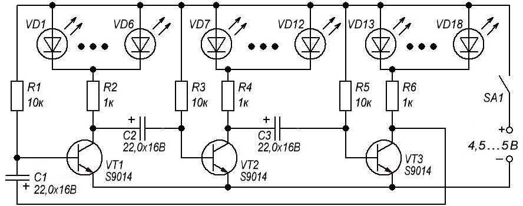
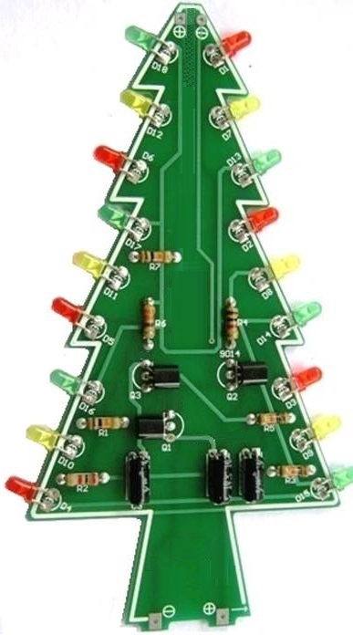

Переключатель трех светодиодных гирлянд
При включении питания устройство мигает разноцветными светодиодными гирляндами. Переключатель работает от источника питания напряжением 4,5...5 В (3 батарейки напряжением 1,5 В, USB порт компьютера, зарядное устройство). Примерный ток потребления – 30 mА.

Таблица 1
| Обозначение | Наименование | Тип | Примечание | Кол-во |
|---|---|---|---|---|
| C1, C2, C3 | Конденсатор электролитический | 22 мкФ/16 В | 3 | |
| R1, R3, R5 | Резистор постоянный | 10 кОм | 0,25-0,5 Вт | 7 |
| R2, R4, R6 | Резистор постоянный | 330 Ом | 0,25-0,5 Вт | 3 |
| VT1, VT2, VT3 | Транзистор | S9014 | КТ3102, КТ6111 | 3 |
| VD1-VD6 | Светодиод зеленый | 6 | ||
| VD7-VD12 | Светодиод красный | 6 | ||
| VD13-VD18 | Светодиод желтый | 6 |
Конструктивно устройство можно выполнить в виде новогодней ёлки (рис. 2).


Источники:
radio-kit.ru - Радиоконструктор RL013. Новогодняя ёлочка со светодиодными гирляндами